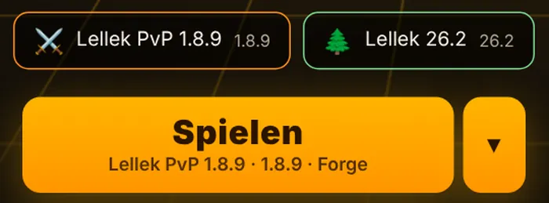
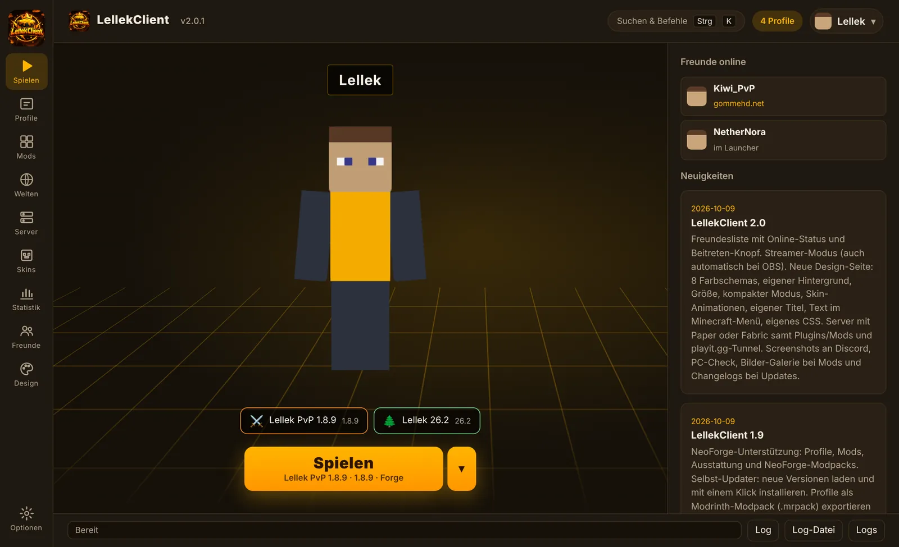
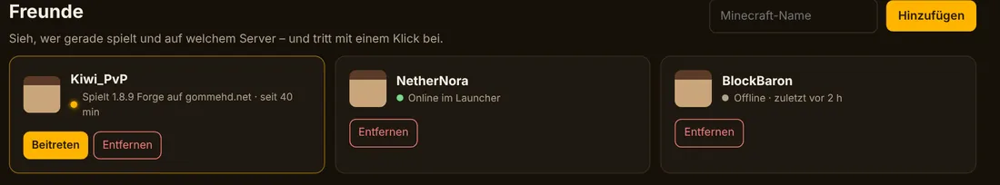
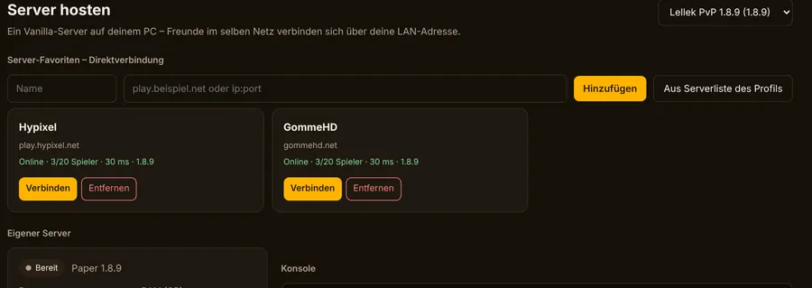
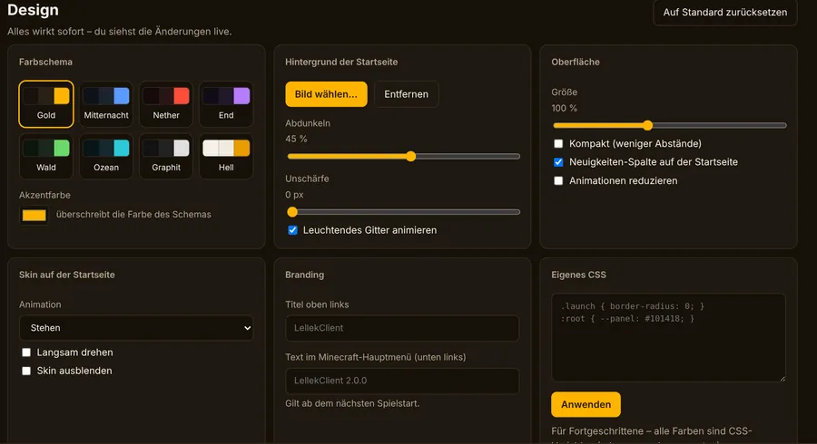
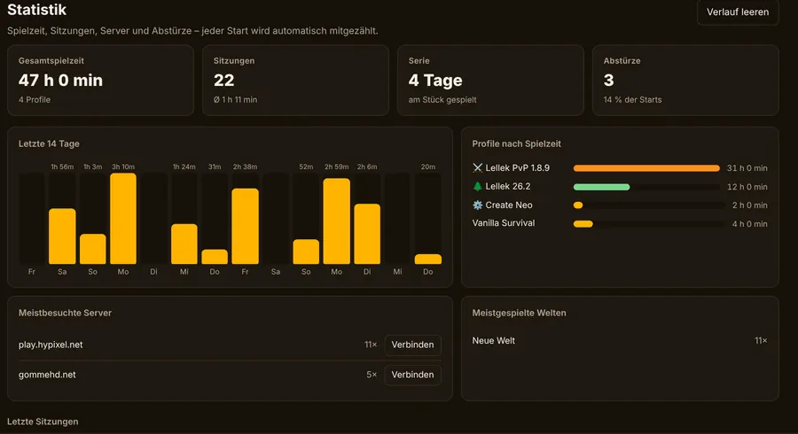

2.1 – LellekClient für den Mac
Apple Silicon und Intel, ⌘-Tastenkürzel, Menüleisten-Symbol. Alte Versionen wie 1.8.9 starten auf M-Chips über Rosetta.
Jede Version von 1.8.9 bis 26.2, Fabric, Forge und NeoForge, Mods und Modpacks mit einem Klick, eigenes HUD, Freundesliste und dein eigener Server – kostenlos für Windows und Mac.

Mod-Manager, Freundesliste, Server-Hosting, Statistik und Design – ohne drei weitere Programme und zehn Browser-Tabs.
Freunde per Minecraft-Name hinzufügen, Online-Status mit Version und Server sehen und mit einem Klick beitreten. Jedes Konto hat seine eigene Liste.

Vanilla, Paper oder Fabric. Plugins von Modrinth, Freunde von außen per playit.gg – ohne Portfreigabe.

Acht Farbschemas, eigener Hintergrund, Größe, Skin-Animation und sogar der Text im Minecraft-Menü.

FPS, CPS, Keystrokes, Koordinaten, Ping, Uhr und Spotify – für 1.8.9, 1.12.2 und 26.2.
Name, Server-IPs, Seeds und Adressen werden verborgen – automatisch, sobald OBS oder Streamlabs läuft.
Modrinth und CurseForge durchsuchen, Modpacks als eigenes Profil, Updates mit Changelog, Mod-Sets zum Umschalten.
Spielzeit pro Tag, Serien, meistbesuchte Server. Nach einem Absturz nennt der Launcher die Ursache und bietet die Lösung gleich an – zum Beispiel „RAM um 2 GB erhöhen“.

PvP auf 1.8.9, Technik-Modpack auf NeoForge, Vanilla-Survival – jedes Profil hat eigene Mods, Welten und Einstellungen.

Apple Silicon und Intel, ⌘-Tastenkürzel, Menüleisten-Symbol. Alte Versionen wie 1.8.9 starten auf M-Chips über Rosetta.
Freundesliste mit Beitreten-Knopf, Streamer-Modus, acht Farbschemas, Paper- und Fabric-Server mit Plugins, PC-Check.
NeoForge-Profile und -Modpacks, Updates mit einem Klick, Profile als Modrinth-Modpack (.mrpack) teilen.
Ja. Du brauchst nur ein Microsoft-Konto mit Minecraft Java Edition. Die Anmeldung läuft im offiziellen Microsoft-Fenster – dein Passwort sieht der Launcher nie.
Ja, auf Apple-Silicon-Macs (M1–M4) und Intel-Macs. DMG öffnen, LellekClient auf „Programme“ ziehen. Die App ist nicht von Apple notarisiert: beim ersten Start Rechtsklick auf die App → „Öffnen“. Meldet macOS „beschädigt“, hilft im Terminal einmal xattr -cr /Applications/LellekClient.app.
LellekHUD zeigt Informationen an und enthält keine Cheats. Ob HUD-Mods erlaubt sind, regelt jeder Server selbst – im Zweifel die Server-Regeln lesen.
Ja. Unter Profile → „Aus anderem Launcher“ übernimmst du Mods, Welten, Einstellungen und Serverlisten aus dem offiziellen Launcher, Prism, MultiMC, CurseForge, Modrinth-App, ATLauncher, Lunar, Feather und NoRisk.
Beide nutzen LellekClient und tragen sich mit dem Minecraft-Namen ein. Jedes Minecraft-Konto hat seine eigene Liste – wechselst du das Konto, wechselt auch die Liste. Den Status kannst du in den Optionen abschalten.
Automatisch: Der Launcher meldet neue Versionen oben rechts. Unter Windows reicht ein Klick zum Installieren, auf dem Mac öffnet sich der Download.
Der komplette Launcher liegt auf GitHub – reinschauen, selbst bauen oder mitmachen.
Zum RepositoryBeschreib kurz, was passiert ist, und häng – wenn vorhanden – den Crash-Report an. Der Launcher findet ihn unter Mods → „Letzten Absturz analysieren“.
Fehler meldenInstallieren, mit Microsoft anmelden, Profil wählen, spielen. Updates kommen danach von selbst.
Download für Windows